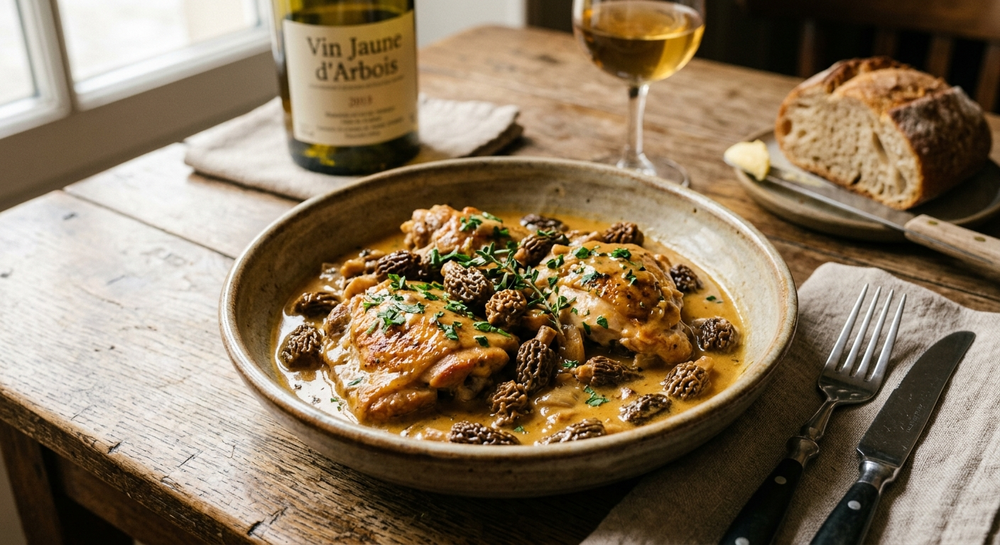

Ce poulet du Jura aux chairs fondantes s'épanouit dans une sauce crémeuse et veloutée, bercée par les aromes uniques du vin jaune. Assorti aux morilles qui libèrent un parfum sous-bois puissant et boisé, ce plat offre un mélange subtil et raffiné, unique en son genre. Chaque cuillerée offre un équilibre parfait entre l'onctuosité de la crème et la complexité aromatique du nectar jurassien. Un monument de la gastronomie française, à la fois somptueux, chaleureux et immédiatement reconnaissable.
La veille, désosser le poulet.
Désosser le poulet, puis le retourner et rentrer les pilons. Utiliser la carcasse, les os, la carotte et le poireau pour préparer le bouillon : faire revenir 10 minutes, mouiller avec un verre de vin blanc du Jura ordinaire, faire réduire, puis couvrir d'eau à fleur et laisser mijoter une heure. passer au tamis, placer le bouillon au frigo.
Le lendemain, dégraisser et réduire le bouillon.
Préparer la farce : couper les champignons en petits morceaux, puis les faire revenir et réduire avec l'échalote. Réhydrater les raisins secs. Couper la demi-brioche en morceaux, la mouiller avec le lait et la malaxer soigneusement à la main. Mélanger les raisins secs, la brioche imbibée, la poêlée de champignons et le persil haché.
Farcir le poulet
Faire revenir le poulet sur les deux faces à la cocotte, verser le bouillon et laisser mijoter une heure à feu doux
Passer le liquide de cuisson au chinois, le verser dans une casserole, ajouter un verre de vin jaune et la crème. Faire frémir. Ajouter les morilles fraîches et faire mojoter 10 minutes.
Découper le poulet, servir et napper de sauce au vin jaune et morilles.
Le vin jaune restant sera servi en accompagnement.